Digicenosis
Naturaleza Digital [No tan] Muerta
 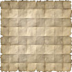
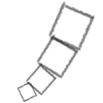
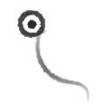
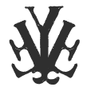
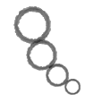
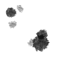
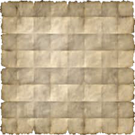
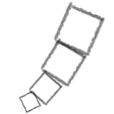
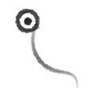
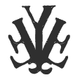
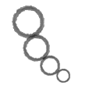
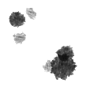


Flora-Fauna
Especies
Pexen
Una de las primeras criaturas descubiertas en los ecosistemas. Son muy tranquilos y de movimientos muy simples. Sin embargo, son de vida prolongada.
Aparentemente, son creados cuando en el ecosistema ingresan coordenadas (por ejemplo, con el cursor).
Oxel
Son criaturas muy raras y tranquilas mientras no se las moleste. Tienen una baja esperanza de vida.
Se puede ver que son creados al ingresar una posicion con el teclado (con las flechas de movimiento).
Stringer
Una de las criaturas mas inteligentes de todas. Sus movimientos son muy desarrollados e impredesibles, puede que se deba al hecho de que se componen por fuentes de texto.
Su nacimiento parece estar ligado al incluir en el ecosistema un valor de entrada de texto (como una letra, por ejemplo).
Belga
Criaturas de hábitos muy simples, y una esperanza de vida promedio. No son adoradores de la bacteria con la cual pueden alimentarse, sin embargo cuando ven la oportunidad lo hacen.
Nacen cuando se ingresa una coordenada al ecosistema (por ejemplo, con el cursor).
Lote
Extraño ser. Parecer responder como una planta o bacteria dentro del ecosistema, ya que los demás seres tienden a devorarlo. Su composición puede ser tóxica para algunas criaturas, por lo que muchas de estas evitan comerlo.
Debe su nacimiento al botón alternativo del mouse (click derecho).